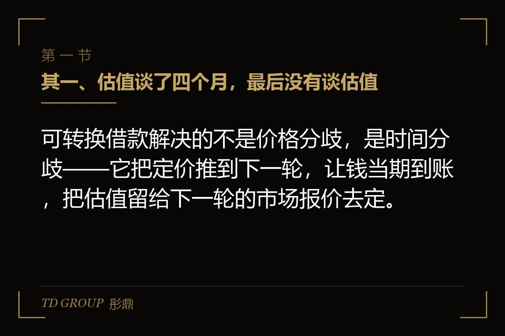
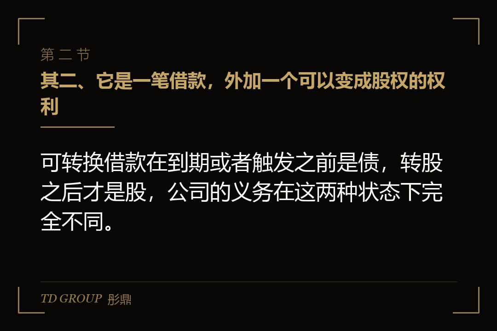
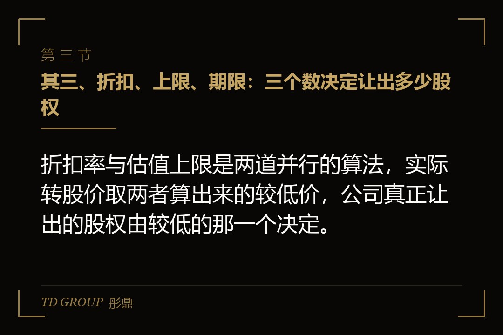

其一、估值谈了四个月，最后没有谈估值

结论先行：可转换借款解决的不是价格分歧，是时间分歧——它把定价推到下一轮，让钱当期到账，把估值留给下一轮的市场报价去定。
假设有家做工业软件的公司，上一年收入三千万元，毛利不错但现金流紧。它跟一家产业背景的机构谈了四个月：公司要两亿元估值，机构给一亿两千万元，中间差着八千万，谁也不肯动。
谈到第四个月，公司账上的钱只够再撑五个月。双方换了一种写法：机构先打两千万元进来，算借款；等公司完成下一轮股权融资时，这两千万按下一轮价格打八折转成股权；如果下一轮的投前估值超过两亿四千万元，就按两亿四千万元这个上限价转。
另外还约定，十八个月内如果没有下一轮，机构可以选择按一亿五千万元的投前估值转股，也可以要求公司还本付息。
钱在签约后第九天到账。公司没有为估值让步，机构也没有为估值让步，两边都把这件事推到了半年后。听上去是双赢，但真正的价格已经写在那三个数里了——只是当天没有人把它乘出来。
其二、它是一笔借款，外加一个可以变成股权的权利

结论先行：可转换借款在到期或者触发之前是债，转股之后才是股，公司的义务在这两种状态下完全不同。
在转股之前，这笔钱在公司账上是一笔负债，投资方是债权人。债权人不参加股东会、不分红，但可以要求按期付息、到期还本，并且在公司清算时排在所有股东之前。
转股之后，这笔钱变成注册资本加资本公积，投资方成为股东。股东有表决权和分红权，但拿不回本金，只能靠转让股权或者公司分配退出。
这个身份切换是这类协议的全部戏剧性所在。对公司来说，它意味着在下一轮之前多背了一笔有期限的债；对投资方来说，它意味着在下一轮之前拿不到股东的任何权利，只能靠协议里的信息条款了解公司在干什么。
所以协议要写清一件事：在转股之前，投资方享有什么。实务里通常会给三样——定期的财务报表与经营数据、重大事项（对外担保、大额借款、核心资产处置、创始人股权变动）的知情或者同意权、以及下一轮融资启动时的通知义务。
还有一个身份问题容易被忽略：公司间的借贷在司法实践中早已认可，但如果出借方是自然人、又频繁向多家公司放款，放款行为本身的定性会被追问。所以这类协议的出借主体，通常应当是机构而不是个人。
其三、折扣、上限、期限：三个数决定让出多少股权

结论先行：折扣率与估值上限是两道并行的算法，实际转股价取两者算出来的较低价，公司真正让出的股权由较低的那一个决定。
接着上面那家公司往下算。半年后新一轮来了，投前估值三亿元，新投资方按这个价格进来。
按折扣算：三亿元打八折，等于两亿四千万元的投前估值。按上限算：上限本来就是两亿四千万元。两条路算出来一样，机构的两千万元按两亿四千万元的投前估值转股，占转股后的比例约百分之七点七。
把数字换一下更容易看清楚。如果下一轮的投前估值是四亿元，折扣算出来是三亿两千万元，上限算出来是两亿四千万元，取低的那个，仍然是两亿四千万元。下一轮估值再高，这两千万元也只按两亿四千万元这条线换股份——上限保护的是投资方，代价是公司。
反过来，如果下一轮估值只有一亿六千万元，折扣算出来是一亿两千八百万元，比上限低，就按一亿两千八百万元转。这时候机构拿到的比例约百分之十三点五，比原本谈崩的那个报价还便宜。
这里有一个很多创始人算漏的地方：折扣与上限保护的是同一方。公司在估值涨上去的时候被上限压住，在估值跌下来的时候被折扣压住，两头都不占便宜。所以谈判的重点不是"有没有上限"，而是"上限定在哪、折扣是几折"。
期限是第三个数。十八个月是常见写法，它既是投资方的保护，也是公司的压力：到期还没有下一轮，那两千万元就从一笔准股权变回一笔要还的债。所以期限该不该定这么短，取决于公司对下一轮时点的真实判断，而不是谈判时谁更强硬。
其四、利息那一栏：写多少算数，能不能抵税
结论先行：可转换借款的利息条款要过两道关，一道是司法上的利率上限，一道是税务上的税前扣除限制。
利率上限这一关。按《最高人民法院关于审理民间借贷案件适用法律若干问题的规定》，借贷双方约定的利率超过合同成立时一年期贷款市场报价利率四倍的部分，人民法院不予支持。可转换借款的票面利率通常远低于这条线，真正要注意的是把违约金、罚息、服务费加总之后会不会一起顶上去。
税务这一关是两层。头一层是凭证：公司支付利息要在企业所得税前扣除，需要取得合规的发票；出借方是机构的，利息收入要按规定开票并缴纳增值税与附加。协议里如果只写"利息随本金一并转股"，到时候这笔利息在税上怎么处理，双方会有分歧。
第二层是关联方债资比。按现行企业所得税规则，企业从其关联方接受的债权性投资与权益性投资的比例超过规定标准（非金融企业为二比一）而发生的利息支出，超过部分不得在计算应纳税所得额时扣除，除非能证明相关交易符合独立交易原则。如果这家机构本来就是公司的股东或者关联方，这一条会直接咬到。
实务里的两种写法差别不小。一种是"本金加累计利息一并转股"，公司不掏现金，但转股时的基数变大，稀释更多；另一种是"利息在转股时以现金结清，只有本金转股"，公司要掏一笔钱，但股权少让一点。
还有一种写法是把利率写成零或者象征性的极低数。它在商业上是可以的，但要提前想清楚两件事：出借方的内部合规能不能接受无息放款，以及税务上会不会被按独立交易原则调整。关键在于，利息这一栏决定的不只是钱，它还决定这笔安排在报表和税表上长什么样。
其五、转股那天要办的事，比协议上写的多
结论先行：转股不是一次账务调整，它是一次增资——要开股东会、要处理其他股东的优先认缴权、要改章程、要办工商变更。
按《公司法》第六十六条，股东会作出修改公司章程、增加或者减少注册资本的决议，应当经代表三分之二以上表决权的股东通过。所以转股这件事要拿到一个合格的股东会决议，不是创始人和投资方两家签个补充协议就完成。
优先认缴权是更容易卡住的一条。按《公司法》第二百二十七条，有限责任公司增加注册资本时，股东在同等条件下有权优先按照实缴的出资比例认缴出资，但是全体股东约定不按照出资比例优先认缴出资的除外。也就是说，如果老股东不放弃这项权利，转股就可能被摊薄或者被要求同比例跟进。
处理办法是在签可转换借款协议的同时，一并拿到全体现有股东的放弃函或者章程层面的约定。这件事放在签约当天做，几乎没有成本；放到转股那天做，就会变成一轮新的谈判，而那时候公司已经花掉了那笔钱。
金额怎么拆也要提前定。两千万元转成股权，并不是全部计入注册资本：按转股价对应的每一元注册资本溢价部分计入资本公积。注册资本增加多少，直接影响工商登记数字、影响其他股东的持股比例计算，也影响后续减资时的程序。
还有一类情形要单独处理：出借方是境外主体。境外资金以借款形式进入境内，涉及外债登记与结汇；后续转股涉及外商投资信息报告与外汇变更登记。这条路能走，但时间表和境内主体完全不同，要在签约前就把路径问清楚，不要等到转股那天才发现钱转不过来。
假设那家工业软件公司的老股东里有一位早期天使，持股百分之八，签约时没人找他签放弃函。半年后转股，他提出要按比例跟投但拿不出钱，转而要求公司给他补偿。这一轮扯皮用掉了五周，而它的成本在签约当天是一张纸。
其六、没转成的那条退路，走起来不一样
结论先行：到期没有下一轮时，"公司还钱"和"创始人回购"是两条法律性质完全不同的路，后者往往更容易执行。
先看还钱这条。可转换借款到期，投资方要求公司还本付息，这是一笔普通的债权请求，法律上没有障碍——障碍在现金。一家没能完成下一轮融资的公司，通常也拿不出两千万元。这时候协议里的展期条款、分期还款条款、以及是否附有担保，才是真正起作用的东西。
再看回购这条。如果协议写的是"到期未转股的，由公司按本金加固定回报回购投资方的股权"，性质就变了。按《全国法院民商事审判工作会议纪要》关于对赌协议的处理，投资方请求目标公司实际履行回购义务的，人民法院要依据禁止股东抽逃出资与股份回购的强制性规定进行审查；经审查目标公司未完成减资程序的，应当驳回其诉讼请求。
这就形成了一个现实中的死结：回购是减资的原因，减资又是回购的前提，而减资要经股东会决议、编制资产负债表与财产清单、通知已知债权人并公告。公司自己不配合，这条路基本走不动。
所以成熟的写法，是把回购义务放在创始人或者控股股东个人身上，而不是放在公司身上。与股东对赌的效力在司法实践中是认可的，执行标的是个人财产，不受公司资本维持规则的限制。对公司有利，对创始人不利——这正是创始人在签字前最该算清楚的一笔账。
还有一个中间选项：到期后由投资方单方选择，要么按约定的兜底估值转股，要么要求还款。选择权在谁手里，是这一段里最贵的一句话。选择权在投资方，公司永远处在被动；约定成"双方协商不成则自动按兜底估值转股"，公司就把最坏情形锁定成了稀释而不是掏钱。
其七、跟另外两条路比，什么时候该用它
结论先行：可转换借款适合"钱很急、价难定、下一轮时点看得见"这三件事同时成立的时候，缺一件就该换路。
跟直接做一轮股权融资比，它的好处是快和不定价。一轮正式股权融资从条款清单到交割通常要三到六个月，要做尽调、要谈一整套股东协议、要办工商；可转换借款的文本短得多，常常几周就能到账。代价是价格没有锁定，公司把定价权交给了下一轮的市场。
跟银行融资比，它不要抵押、不看报表上的那几个比率，对轻资产的软件和技术公司更现实。代价是它最终要用股权来付：银行的钱还完就结束了，这笔钱还完的方式通常是让出股份。
跟老股转让比，可转换借款的钱进的是公司账户，用于经营；老股转让的钱进的是股东口袋，公司一分钱不多。两者解决的根本不是同一个问题，不该放在一起比价格。
什么时候不该用它。下一轮的时点看不见的时候不该用——到期没转成，那笔债会在最艰难的时刻到期。公司经营性现金流覆盖不了本金的时候要慎用，因为它在最坏情形下是一笔必须还的钱。已经签过两三份条件各异的可转换借款时更要停下来，多份折扣与上限叠在一起，下一轮的股权表会算不清楚，新投资方看到这种结构常常直接掉头。
本质上，这笔钱买的是时间。时间用得好，下一轮的估值把折扣和上限都跑赢了，公司让出去的比当初谈崩的那个报价还少；时间用不好，它就变成一笔到期的债加一次被动的稀释。
其八、签字前要逐行看清的几句话
结论先行：可转换借款的协议通常只有几页，但决定这笔钱真实成本的就那七八句话，签字之前要逐句看完、逐句算一遍。
转股触发事件怎么定义。"下一轮股权融资"要不要设最低规模门槛——不设的话，一笔三百万元的小额增资也可能触发转股，而那时候的估值未必是公司想要的。
上限与折扣的组合。上限定在哪个数、折扣是几折、两者同时适用还是取低，以及上限对应的是投前估值还是投后估值。投前投后一字之差，算出来的持股比例差得不小。
控制权变更时怎么办。公司在转股之前被整体并购的，投资方通常会要求二选一：按本金的约定倍数拿现金，或者按上限价转股后参与交易。这一条不写，交易发生时会卡住交割。
期限到期后的选择权在谁手里，以及是否允许展期、展期的条件是什么。选择权在投资方，公司在最坏的时点上没有主动权；写成到期自动按兜底估值转股，公司锁定的就是稀释而不是掏现金。这一句的分量比它的长度大得多。
清算优先怎么排。转股之后这部分股权是普通股，还是与下一轮享有同等的优先分配权，直接决定公司清算或者被整体出售时各方拿钱的先后顺序，也影响下一轮投资方愿不愿意接受这个结构。
担保与个人责任。有没有创始人个人连带、有没有股权质押、有没有实际控制人的差额补足承诺。这一条决定最坏情形落在公司身上还是落在个人身上。
回到开头那家公司。如果重来一次，是接受机构一亿两千万元的报价、现在就把这一轮做完、条款一次谈清楚；还是签这份可转换借款、把定价推到半年后、赌下一轮能跑到三亿？站在创始人和站在出钱那一方的位置上，这两条路算出来的不是同一笔账，你会怎么选？